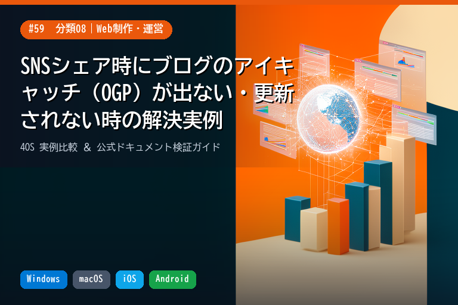

#59｜分類08: Web制作・ブログ・デジタルマーケティング 2026-11-24

SNSシェア時にブログのアイキャッチ（OGP）が出ない・更新されない時の解決実例｜Windows・macOS・iOS・Android
「ブログを更新したのに、SNSでシェアすると古い画像が表示される」「新しく作った記事なのに、プレビュー画像が真っ白なまま……」
Webサイトやブログを運営している方なら、一度はこのようなトラブルに直面したことがあるはずです。せっかくこだわって作成したアイキャッチ画像（OGP）が表示されないと、クリック率の低下やブランドイメージの損害に繋がるため非常にストレスを感じる問題です。
この記事では、なぜSNSで古い画像が表示されるのかという技術的背景を解説し、Windows、macOS、iOS、Androidの4つの主要OSごとに「標準機能」を使って解決する具体的な手順を徹底比較します。
4OS比較早見表
| OS | 主要ブラウザ | キャッシュ削除の主な操作 | モバイルシミュレーション | 特徴・注意点 |
|---|---|---|---|---|
| Windows | Edge / Chrome | Ctrl + F5 / 設定メニュー |
DevTools（F12） | ハードウェアアクセラレーションの影響に注意 |
| macOS | Safari | 「閲覧データとプライバシー」 | 開発者用メニュー | Time Machineによる復元時の挙動に注意 |
| iOS | Safari | 設定アプリ / Safariアプリ内 | シェア画面のプレビュー | デバイス固有のストレージ管理に注意 |
| Android | Chrome | メニュー ＞ 履歴 ＞ 閲覧データ | モバイル表示設定 | アプリごとのキャッシュ分離に注意 |
1. Windows 11 での実例手順
Windows環境では、ブラウザの強力なキャッシュ機能が原因で「古いOGP」を掴み続けていることが多々あります。
公式実例：Edge を用いたキャッシュクリア
まずは最も手軽な「ハードリロード」から試します。
1. Microsoft Edgeで該当のブログ記事を開きます。
2. キーボードの Ctrl + F5 を同時に押すか、ページを右クリックして「ページを再読み込み」を選択します。
3. それでも変わらない場合は、ブラウザの設定へ移動します。
- 右上の「…」メニュー ＞ 「設定」 ＞ 「プライバシー、検索、サービス」 ＞ 「閲覧データのクリア」。
- 「閲覧データ」タブで「イメージとファイルのキャッシュ」にチェックを入れ、「今すぐクリア」をクリックします。
公式実例：モバイル表示確認（DevTools）
SNSのクローラーは「スマホ用ページ」としてサイトを見に来ることが多いため、PC画面では正しくてもスマホでは正しくないという現象が起こります。
1. EdgeまたはChromeで記事を開き、F12キーを押してデベロッパーツールを起動します。
2. 左上の「デバイスモード（スマホ・タブレットのアイコン）」をクリックします。
3. 上部のドロップダウンから「iPhone」や「Pixel」を選択し、ページを再読み込みします。これでSNSが読み取る状態に近い挙動を確認できます。
よくあるトラブルと解決法（Windows）
- ハードウェアアクセラレーションによる描画エラー
- 症状: ページの一部が表示崩れ、OGP画像が正しく読み込めない。
- 対策: Edgeの設定で「システムとパフォーマンス」を開き、「グラフィックアクセラレーションを有効にする」をオフにして再起動します。
- 拡張機能による遮断
- 症状: アダブロッカー等の拡張機能がMetaタグの読み取りを阻害している。
- 対策: 拡張機能を一時的に無効化してページを再読み込みします。
- DNSキャッシュによる古いIP解決
- 症状: ドメイン変更後、旧サーバーの画像が表示される。
- 対策: コマンドプロンプトを管理者権限で開き、
ipconfig /flushdnsを実行してネットワークキャッシュをクリアします。
2. macOS での実例手順
macOS（Safari）では、プライバシー設定と連動したキャッシュ管理を行うのが基本です。
公式実例：Safari を用いた履歴・キャッシュ削除
- Safariのメニューバーから「設定（または環境設定）」を開きます（
Cmd+,）。 - 「詳細」タブ（または「プライバシー」）へ移動し、「閲覧データとプライバシー」を選択します。
- 期間を指定し、「画像」および「Cookie データ」にチェックを入れて「現在の履歴を消去」を実行します。
公式実例：iPhone シミュレーションの確認方法
- Safariで
Cmd+Option+Iを押し、開発者用メニューを表示させます。 - ツールバーに表示される「モバイルデバイス」アイコンをクリックし、シミュレートしたい機種を選択します。
- 制限事項: macOSのSafariはiOSと完全に同期したキャッシュ挙動を再現する機能には限界があるため、あくまで「開発者モードでの検証」として活用してください。
よくあるトラブルと解決法（macOS）
- 「閲覧データ削除」ダイアログでの項目選択ミス
- 症状: 「すべての履歴」を消去してしまい、ログイン情報まで全て消える。
- 対策: ダイアログ表示時に「画像」「Cookie データ」のみを選択するように注意してください。
- Time Machine 復元によるキャッシュの復活
- 症状: バックアップからリストアした際、古いブラウザデータが戻りOGPが変わらない。
- 対策: Time Machine管理画面から該当日のSafari設定ファイルを除外し、再作成します。
- システム拡張の制限によるメニューグレーアウト
- 症状: セキュリティアップデート後、キャッシュ削除ボタンが押せない。
- 対策: 「システム設定」＞「プライバシーとセキュリティ」からブラウザのコンテンツブロック許可を再確認します。
3. iOS（iPhone / iPad）での実例手順
モバイル端末では、アプリ内の独自ストレージにキャッシュが保持されているため、OSの設定からアプローチします。
公式実例：Safari の閲覧データ削除
- iPhoneの「設定」アプリを開きます。
- 「Safari」を選択し、「プライバシーとセキュリティ」をタップします。
- 「履歴とウェブデータを消去」をタップし、実行します。
- 補足: これによりOGPに関連するセッション情報や古い画像キャッシュがクリアされます。
公式実例：共有プレビューの確認方法
- LINEやXなどのSNSアプリでURLを貼り付けます。
- シェア画面が表示された状態で、スクリーンショットを撮って確認します。
- 制限事項: iOSの標準機能では「PCブラウザのキャッシュ」とは別のストレージを使用するため、iPhone側を消去してもPC側の表示が変わらない場合があることに注意してください。
よくあるトラブルと解決法（iOS）
- ログインセッションの切断
- 症状: 「すべての履歴を消去」によりSNSアプリからログアウトされる。
- 対策: 設定アプリ内の「閲覧データを消去」と「Cookieを削除」が別メニューにある場合があるため、必要な項目だけを選択します。
- プライベートブラウジングモードでの検証失敗
- 症状: プライベートモードでもOGPが変わらない。
- 対策: 一度通常モードに戻し、「閲覧データを消去」を実行してから再度アクセスしてください。
- iOSバージョン更新直後のキャッシュ不整合
- 症状: OSアップデート後、Safariの表示が古いまま固定される。
- 対策: 設定 ＞ Safari で「履歴とウェブデータを消去」を行い、端末を再起動します。
4. Android での実例手順
Androidは機種やメーカー（Pixel, Galaxyなど）によってUIが異なりますが、Chromeアプリでの操作が基本です。
公式実例：Chrome の閲覧データ削除
- Chromeアプリを開き、右上の「…」メニューから「履歴」をタップします。
- 「閲覧データの削除」を選択します。
- 「キャッシュされた画像とファイル」にチェックが入っていることを確認し、「データを削除」を実行します。
公式実例：モバイルビューの確認方法
- Chromeアプリで、メニューの「PC サイト」のチェックがオフになっていることを確認します。
- デスクトップモードで表示されると、SNSクローラーとは異なる挙動になることがあるため、標準のモバイル表示で確認することが重要です。
- 制限事項: Androidシステム全体でのキャッシュ削除機能は存在しないため、アプリごとに管理されている点に注意が必要です。
よくあるトラブルと解決法（Android）
- ブックマークやパスワードの消失
- 症状: 「すべてのデータを消去」を押し、運営アカウントのログイン情報が消える。
- 対策: 必ず「キャッシュされた画像」のみを選択して削除してください。
- アプリごとのデータ管理の分離
- 症状: Chromeで消してもLINEアプリ内のプレビューが古いまま。
- 対策: LINEなどのSNSアプリ自体の設定（プライバシー等）から、アプリ内キャッシュをクリアする必要があります。
- Androidバージョンによるメニュー表示の違い
- 症状: 「履歴」という項目が見つからない。
- 対策: メニューの「三点リーダー」から直接「閲覧データ」を探してください。ラベルが異なる場合があります。
よくあるトラブルと解決チェックリスト
標準機能で解決しない場合の最終チェックリストです。
- キャッシュ削除後の再読み込みを忘れていないか？
- 解決: ブラウザを完全に終了（タスクキル）してから、URLを直接入力してアクセスし直してください。
- SNS側のサーバーキャッシュが残っていないか？
- 解決: SNS側には「リンクの再スキャン」をリクエストする機能が必要です。Xは公式ツール、LINE/Facebookは管理画面（Facebookシェアデバッガー等）からリフレッシュを行ってください。※これらは標準機能ではないため代替手段として活用します。
- Metaタグの記述自体にミスはないか？
- 解決: HTMLコードを確認し、
og:imageのパスが「相対URL（/image.jpg）」ではなく「絶対URL（https://...）」になっているか確認してください。
- 解決: HTMLコードを確認し、
まとめ：快適なマルチOS環境を作るポイント
OGPの反映不全は、単なるブラウザの問題だけでなく、サーバーやドメインの設定に起因することも少なくありません。スムーズなWeb運営を行うためには、以下の要素を整えておくことが近道です。
- レンタルサーバーの活用: 高性能なサーバーを選べば、キャッシュクリアコマンドや高速なファイル配信が可能になり、更新の反映がスムーズになります。
- 独自ドメインとSEOツール: 信頼性の高い独自ドメインを取得し、Google Search Consoleなどのツールを導入することで、OGPだけでなく検索エンジンへのインデックス状況も正確に把握できます。
- Web制作教材の活用: 正しいMetaタグの書き方や、SNS推奨の画像サイズ（1200×630pxなど）を学ぶことで、そもそも「表示されない」というトラブル自体を未然に防ぐことができます。
Windows/macOS/Android/iOSそれぞれの特性を理解し、適切なキャッシュクリアと設定を行うことで、ストレスのないブログ運営を実現しましょう。
参考文献・公式ドキュメント（一次情報ソース）
本記事の手順・仕様は以下の各OSおよびツールの公式ドキュメントに基づいています。OSアップデートによりメニュー名称や挙動が変わる場合があるため、最新仕様の確認にもご活用ください。